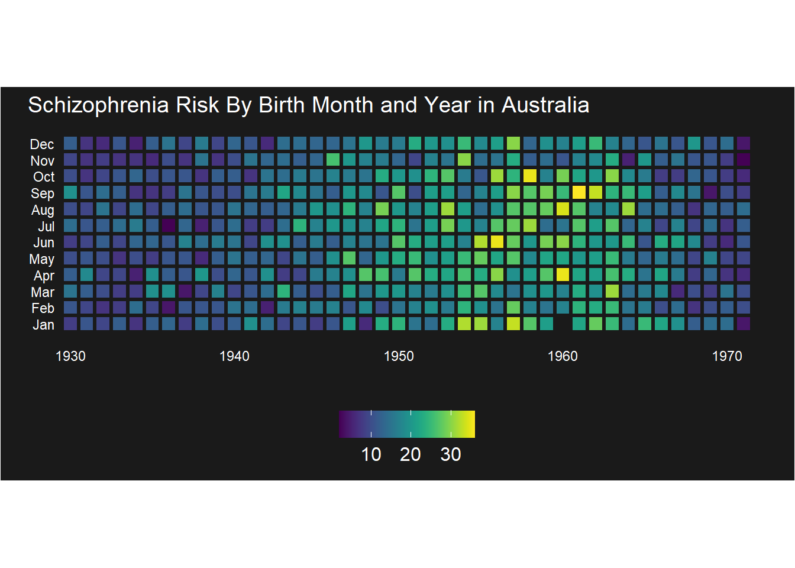

Heatmaps are generated by filling in the cells of a grid with a color gradient or palette. In ggplot2 the function to use is geom_tile() to achieve this effect.
8.1Example 1 -Categorical axes
Here, we have a dataset where we have three columns. The first column represents categorical variables (A to E) that will go on the bottom x-axis. The second column represents categorical variables (A to E) that will go on the y-axis. We have one row for every possible combination, so in this case we have 25 rows. The third column contains the value that we wish to represent by the fill color in the tile of the heatmap. I am using random values between 1 and 100 for this. The higher the value, the deeper the color we will use.
Var1 Var2 Value
1 A A 73
2 B A 57
3 C A 46
4 D A 95
5 E A 81
6 A B 58
Below, we will plot the heatmap without adding any stylistic elements.
library(tidyverse)ggplot(df, aes(Var1, Var2, fill = Value)) +geom_tile()
As can be seen, each cell (or tile) has a different degree of color fill based on it’s cell value in the Value column of the dataframe df. Brighter and lighter colors represent higher values of the Value column.
A first step to make this prettier may be to add boundaries between the cells. This can be done by adding a linewidth and a color of this line as follows:
ggplot(df, aes(Var1, Var2, fill = Value)) +geom_tile(color="white", linewidth=1.75)
This looks nicer. Another thing that bugs me is that the default is to produce rectangular cells rather than square cells. This can be fixed by adding coord_equal().
ggplot(df, aes(Var1, Var2, fill = Value)) +geom_tile(color="white", linewidth=1.75) +coord_equal()
A next step that I often to is to add the following code to ensure that my cells are centered above each label. In this case, this doesn’t seem to change very much, but I have found it to be useful occasionally:
The next thing that bugs me about this heatmap is that the default color gradient isn’t particularly intuitive to me. I’d rather my values go from a light color (low values) to a darker color (high values). To do this, we can state a low and high color value within scale_fill_continuous(). Here, we go from a very light to a darker purple color.
Next, I find the axes labels and tick marks annoying, so I can remove these using xlab(""), ylab(""), and axis.ticks() inside theme(). I also increase the size of the labels on the axes.
Finally, I’d rather my legend be on the bottom of the heatmap, and we don’t need the label on the legend. This can also be fixed within the theme() argument:
What happens is that these default to a dark-greyish beige color, as seen above. In some circumstances, this color fill will be fine. However, in other situations we might want to dictate the color. Here, we make those NA cells white by adding na.value = "white" inside our scale_fill_continuous() .
Axes don’t have to be categorical. You can use discrete numbers also. They will be plotted in numerical order. Here we produce an example of a matrix which is 56 columns wide and 4 rows tall.
Note that numeric values don’t show automatically here. This is because of the scale_x_discrete() and scale_y_discrete() lines. We can add the numeric labels by using the continuous scales instead and dictating what the breaks should be if required:
A common usage of heatmaps is to illustrate the correlations between a set of continuous variables.
First, we should look at some data. Let’s import the dataset cordata.csv from our folder data_raw. This dataset contains eight continuous variables, boringly named V1, V2,…… V8.
A quick way to get all the correlations between continuous variables in a data.frame is to use cor(). I’m surrounding this function with round() to make the output more easy to read:
This matrix is essentially what we want to plot, however, to do that, we first need to turn it into a dataframe with three columns. The first two being the row and column of the eventual plot and the third being the fill value (the correlation coeffecient). We can melt() the matrix into that dataframe:
Let’s plot this long data using similar code to above. However, here I’m using scale_fill_gradient2() to set low, mid and high colors at Pearson correlations of -1, 0 and +1 respectively:
There are three problems with this matrix. First, who cares that the diagonals are all r=1. We don’t need that information. Second, correlation matrices have symmetry along the axis, and so we could just plot either the upper or lower triangle of the matrix. Third, these variables could be reordered to make the relationships between variables be more intuitive.
Let’s get rid of the diagonal and only keep the lower triangle. We can use the functions diag() and upper.tri() to make the diagonal and top triangle of the matrix NA. Then we melt the matrix again:
diag(cdmat)<-NAcdmat[upper.tri(cdmat)]<-NAcdmat
V1 V2 V3 V4 V5 V6 V7 V8
V1 NA NA NA NA NA NA NA NA
V2 0.87 NA NA NA NA NA NA NA
V3 -0.26 -0.33 NA NA NA NA NA NA
V4 -0.02 -0.15 0.34 NA NA NA NA NA
V5 0.15 0.15 -0.81 -0.03 NA NA NA NA
V6 0.19 0.17 -0.25 0.40 0.33 NA NA NA
V7 -0.75 -0.74 0.44 0.03 -0.30 -0.39 NA NA
V8 -0.79 -0.92 0.38 0.26 -0.23 -0.08 0.64 NA
We can plot this in the same way as before but adding na.value="white" inside the scale_fill_gradient2() to white out the NA values, leaving the bottom of the matrix.
Below are some well known examples of using geom_tile() to create heatmaps examining trends in the prevalence of diseseas over time. First, we’ll look at the effect of birth month on risk of developing schizophrenia in an Australian cohort. This is using the schz dataset from the season R package:
Each row of this dataset contains information on the incidence of schizophrenia for individuals born for each month of the year between 1930-1971. We use the column SczBroad as a measure of schizophrenia risk at each timepoint.
We plot the data below using similar code to above. In addition, we are using scale_fill_viridis() from the viridis R package to fill our tiles from a gradient of dark purple (low risk) to bright yellow (high risk). We are using option D, one of four colorblind friendly palettes available in this package. Within theme() most of the lines are making the background panel and borders a dark gray color (gray10), and adjusting the placement of text labels.
library(viridis)ggplot(schz, aes(year, month, fill = SczBroad)) +geom_tile(colour="gray10", linewidth=1.1) +coord_equal() +scale_fill_viridis(option="D",na.value ="gray10") +scale_y_continuous(breaks=1:12, labels=month.abb[1:12])+xlab("") +ylab("") +ggtitle("Schizophrenia Risk By Birth Month and Year in Australia") +theme(plot.title =element_text(color="white",hjust=0,vjust=1, size=rel(1.3)),plot.background =element_rect(fill="gray10"),panel.background =element_rect(fill="gray10"),panel.border =element_rect(fill=NA,color="gray10", linewidth =0.5, linetype="solid"),panel.grid.major =element_blank(),panel.grid.minor =element_blank(),axis.line =element_blank(),axis.ticks =element_blank(), axis.text =element_text(color="white", size=rel(0.8)),axis.text.y =element_text(hjust=1, margin =margin(r =-20)),legend.text =element_text(color="white", size=rel(1.1)),legend.background =element_rect(fill="gray10"),legend.position ="bottom",legend.title=element_blank() )

In the next example, we are looking at the effect of the introduction of vaccinations on the prevalence of measles in the USA. The data are in the diseases.csv dataset. I’ve based this on code from this blog post.
dis <-read.csv("data_raw/diseases.csv")head(dis)
disease state year weeks_reporting count population
1 Hepatitis A Alabama 1966 50 321 3345787
2 Hepatitis A Alabama 1967 49 291 3364130
3 Hepatitis A Alabama 1968 52 314 3386068
4 Hepatitis A Alabama 1969 49 380 3412450
5 Hepatitis A Alabama 1970 51 413 3444165
6 Hepatitis A Alabama 1971 51 378 3481798
The dataset contains the total number of cases reported by each state for each disease for each year between 1928-2011. It should be noted that not all states start at the same time point. As can be seen above, Alabama’s Hepatitis reporting starts in 1966. In total, there are data on 7 different diseases, but we’ll just look at measles.
To compare across years and states, we need to make our data more uniform. One way is to look at the number of cases per e.g. 100,000 people. However, this is complicated by the issue that the data don’t come from full years but from different number of weeks within a year. So first, we should get a “per week” count for each disease in each state and then multiply by 52 to get a “per year” count. Then we can divide this by the population of the state in that year and multiply that by 100,000 to get an incidence per 100k people:
# A tibble: 6 x 5
# Groups: state, disease [1]
state disease year peryear per100k
<chr> <chr> <int> <dbl> <dbl>
1 Alabama Hepatitis A 1966 334. 9.98
2 Alabama Hepatitis A 1967 309. 9.18
3 Alabama Hepatitis A 1968 314 9.27
4 Alabama Hepatitis A 1969 403. 11.8
5 Alabama Hepatitis A 1970 421. 12.2
6 Alabama Hepatitis A 1971 385. 11.1
Let’s focus on Hepatitis A. Before plotting we will do two additional data carpentry steps. We will first reverse the order of the levels of the factor state. The default way to plot these states will be in alphabetical order along the y-axis starting with Alabama closest to the x-axis and Wyoming the furthest away. However, this is annoying to read as we are used to seeing A’s at the top and W’s near the bottom of a list of states. Second, rather than filling the tiles in a continuous gradient, we will create 7 discrete bins of color. These bins are not equivalent in terms of size which does somewhat break the rules of data visualization - i.e. an equal step in color gradient should map to an equal step in value. However, I think it can be justified in this context as we are interested in picking out “very low”, “low”, “medium”, “high”, “very high” number of cases etc. This new variable will be called countfactor.
Below we plot the data using geom_tile(). We use scale_fill_manual() with 7 colors that we pick ourselves to represent the 7 categories. Inside theme() we control the sizes and colors of text and the background colors. We also use coord_cartesian(), geom_vline() and annotate() to add the black line at 1963 and associate text to indicate when the vaccine was introduced.
# assign text colortextcol <-"grey40"p <-ggplot(meas, aes(x=year, y=state, fill=countfactor))+geom_tile(color="white", linewidth=0.2)+guides(fill=guide_legend(title="Cases per\n100,000 people"))+labs(x="", y="", title="Incidence of Measles in the US")+scale_y_discrete(expand=c(0, 0))+scale_x_continuous(expand=c(0, 0), breaks=seq(1930,2000,10))+scale_fill_manual(values=c("#d53e4f", "#f46d43", "#fdae61", "#fee08b", "#e6f598", "#abdda4", "#ddf1da"), na.value ="grey90")+coord_cartesian(clip ='off')+geom_vline(xintercept =1963, col ="black") +theme_grey(base_size=10)+theme(legend.position="right", legend.direction="vertical",legend.title=element_text(colour=textcol),legend.margin=margin(grid::unit(0, "cm")),legend.text=element_text(colour=textcol, size=7, face="bold"),legend.key.height=grid::unit(0.8, "cm"),legend.key.width=grid::unit(0.2, "cm"),axis.text.x=element_text(size=10, color=textcol),axis.text.y=element_text(vjust=0.2, size=rel(0.7), color=textcol),axis.ticks=element_line(size=0.4),plot.background=element_blank(),panel.border=element_blank(),plot.margin=margin(0.7, 0.4, 0.1, 0.2, "cm"),plot.title=element_text(colour=textcol, hjust=0, size=14, face="bold") )+annotate(geom ="text", x =1963.5, y =52, label ="Vaccine introduced", size =3, hjust =0)
Warning: The `size` argument of `element_line()` is deprecated as of ggplot2 3.4.0.
i Please use the `linewidth` argument instead.
p
Rather than manually writing in the colors we want to represent each discrete group, we could also use a palette of 7 colors by using the RColorBrewer package.